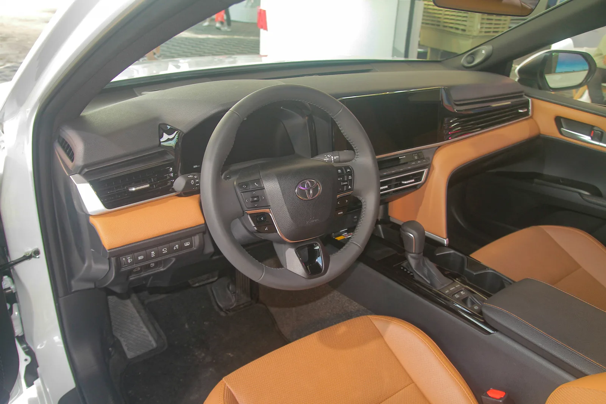

▲ 켜져 있어야 작동하는 장치들이다. 꺼두면 없는 것과 같다
요즘 차에는 안전 장비가 기본으로 잔뜩 들어갑니다.
문제는 그게 켜져 있느냐입니다.
영국 운전자 1,350명을 조사했더니, 적응형 크루즈 컨트롤을 안 쓴다는 응답이 25.9%였습니다. 자동 긴급제동도 21.3%가 쓰지 않는다고 답했습니다.
1. 어떤 기능이 얼마나 꺼지나
| 기능 | 미사용 | 비고 |
|---|---|---|
| 적응형 크루즈 컨트롤 | 25.9% | 추가 7%는 사용법을 모름 |
| 자동 긴급제동 | 21.3% | — |
| 차선 유지 보조 | 17.8% | — |
| 음성 어시스턴트 | 17.8% | — |
| AR 헤드업 디스플레이 | 17.1% | 추가 7%는 사용법을 모름 |
📍 "5명 중 1명"이라는 표현은 조금 느슨하다
이 조사를 소개한 기사들은 "5명 중 1명이 안전 기술을 끈다"고 요약했습니다. 다만 실제 데이터는 기능마다 다릅니다. 가장 높은 항목이 적응형 크루즈 컨트롤 25.9%로 오히려 4명 중 1명에 가깝고, 자동 긴급제동은 21.3%입니다. 하나의 숫자로 뭉뚱그리기보다 기능별로 나눠 보는 편이 정확합니다.
2. 왜 끄나
가장 많이 나온 불만은 개입 강도입니다. "너무 공격적이어서 오히려 문제를 만든다"는 인식이 자동 긴급제동을 끄게 만드는 주요 원인으로 지목됐습니다.
| 기능 | 흔한 불만 |
|---|---|
| 자동 긴급제동 | 위험하지 않은 상황에 급제동이 걸린다 |
| 차선 유지 보조 | 핸들이 제멋대로 당겨지는 느낌 |
| 적응형 크루즈 | 끼어들기에 과하게 감속한다 |
| 차선 이탈 경고 | 경고음이 너무 잦다 |
공통점이 보입니다. 오작동이 아니라 '체감 오작동'입니다. 시스템은 설계대로 작동하고 있는데, 운전자가 보기엔 불필요한 개입인 경우가 많습니다.
여기에 사용법 문제도 겹칩니다. 적응형 크루즈와 AR 헤드업 디스플레이는 각각 7%가 "쓸 줄 몰라서" 안 쓴다고 답했습니다. 기능이 있어도 꺼내 쓰지 못하는 셈입니다.

▲ 기능이 늘수록 설정 메뉴도 깊어진다. 쓸 줄 몰라 안 쓰는 경우도 적지 않다 ⓒ Wikimedia Commons

▲ 마사지 시트 78%, 원격 시동 75.5%는 아예 쓰이지 않았다 ⓒ Wikimedia Commons
3. 편의 기능은 더 심하다
| 기능 | 미사용 |
|---|---|
| 마사지 시트 | 78% |
| AR 헤드업 디스플레이 | 77.6% |
| 원격 시동 | 75.5% |
넷 중 셋 이상이 쓰지 않습니다. 옵션 가격에 포함돼 있거나 상위 트림의 구성으로 따라온 기능들입니다.
이 숫자는 옵션을 고를 때 참고가 됩니다. 화려한 사양이 트림 선택의 이유가 되곤 하지만, 실제 사용 빈도는 생각보다 낮습니다.
4. 꺼두면 무엇이 달라지나
이번 조사에는 안전 영향에 대한 정량 분석이 담기지 않았습니다. 그래서 "몇 % 위험해진다"는 식으로 말할 수는 없습니다.
다만 구조적으로 분명한 것은 있습니다. 자동 긴급제동은 운전자가 반응하지 못한 상황을 전제로 작동하는 장치입니다. 꺼두면 그 상황에서 아무것도 개입하지 않습니다.
📍 보험·평가에서도 전제로 삼는다
각국의 신차 안전도 평가는 이런 장치들이 켜져 있는 상태를 기준으로 점수를 매깁니다. 보험료 할인 역시 장착 여부를 근거로 산정되는 경우가 있습니다. 장착돼 있으나 꺼져 있는 상태는 이 전제와 어긋납니다.

▲ 완전히 끄기 전에 개입 강도를 조절할 수 있는지부터 확인해 볼 만하다 ⓒ Wikimedia Commons
5. 끄기 전에 해볼 것
많은 차에서 개입 강도를 조절할 수 있습니다. 완전히 끄는 것과 약하게 조정하는 것은 다릅니다.
✅ 설정에서 확인해 볼 항목
· 차선 유지 — '조향 개입'과 '경고만' 중 선택할 수 있는 차가 많습니다
· 전방 충돌 경고 — 경고 시점을 빠름/보통/늦음으로 조절
· 적응형 크루즈 — 차간거리 단계와 가감속 반응 강도
· 경고음 — 소리 대신 진동으로 바꿀 수 있는 경우
· 시동 시 기본값 — 껐다가도 재시동 시 다시 켜지는지 확인
마지막 항목이 중요합니다. 자동 긴급제동처럼 안전에 직결되는 기능은 시동을 걸 때마다 자동으로 다시 켜지도록 설계된 차가 많습니다. 이 경우 매번 끄고 있다면, 그만큼 불편이 크다는 뜻이므로 강도 조절이나 점검을 알아보는 편이 낫습니다.
6. 정리
영국 운전자 1,350명 조사에서 적응형 크루즈 컨트롤 미사용이 25.9%로 가장 높았습니다. 자동 긴급제동 21.3%, 차선 유지 보조 17.8%가 뒤를 이었습니다.
주된 이유는 고장이 아니라 개입 강도입니다. 시스템은 설계대로 작동하는데 운전자가 보기엔 과하다고 느끼는 경우가 많습니다.
끄기 전에 강도 조절을 먼저 확인해 보세요. 완전히 끄는 것과 약하게 맞추는 것은 다릅니다. 그리고 "5명 중 1명"이라는 요약보다 기능별 숫자로 보는 편이 정확합니다.